def draw_tree(t, df, size=10, ratio=0.6, precision=0, **kwargs):
s=export_graphviz(t, out_file=None, feature_names=df.columns, filled=True, rounded=True,
special_characters=True, rotate=False, precision=precision, **kwargs)
return graphviz.Source(re.sub('Tree {', f'Tree {{ size={size}; ratio={ratio}', s))
def cluster_columns(df, figsize=(10,6), font_size=12):
corr = np.round(scipy.stats.spearmanr(df).correlation, 4)
corr_condensed = hc.distance.squareform(1-corr)
z = hc.linkage(corr_condensed, method='average')
fig = plt.figure(figsize=figsize)
hc.dendrogram(z, labels=df.columns, orientation='left', leaf_font_size=font_size)
plt.show()Analysis
Analysis based on Decision Trees, Random Forests, and Neural Networks.
Definitions
Let us first define some functions used throughout the notebook. We don’t include the imports for the sake of space, but please look at the notebook nbs/analysis.ipynb for details.
Let us also define some variables:
path = Path('data/datasets/autos.csv')
results_path = Path('results/used_cars')
results_path.mkdir (parents=True, exist_ok=True)
target_variable = 'sale_duration'
outliers = dict (numeric_variables_high=0.99,
numeric_variables_low=0.01,
date_created=True)
add_datepart_flag = Truecd ../home/jaumeamllo/workspace/mine/tabularmlLoad data
The first step is to load the data and have a quick look at it:
df = pd.read_csv(path, encoding="ISO-8859-1", parse_dates=['dateCrawled', 'dateCreated', 'lastSeen'])df.head()| dateCrawled | name | seller | offerType | price | abtest | vehicleType | yearOfRegistration | gearbox | powerPS | model | kilometer | monthOfRegistration | fuelType | brand | notRepairedDamage | dateCreated | nrOfPictures | postalCode | lastSeen | |
|---|---|---|---|---|---|---|---|---|---|---|---|---|---|---|---|---|---|---|---|---|
| 0 | 2016-03-24 11:52:17 | Golf_3_1.6 | privat | Angebot | 480 | test | NaN | 1993 | manuell | 0 | golf | 150000 | 0 | benzin | volkswagen | NaN | 2016-03-24 | 0 | 70435 | 2016-04-07 03:16:57 |
| 1 | 2016-03-24 10:58:45 | A5_Sportback_2.7_Tdi | privat | Angebot | 18300 | test | coupe | 2011 | manuell | 190 | NaN | 125000 | 5 | diesel | audi | ja | 2016-03-24 | 0 | 66954 | 2016-04-07 01:46:50 |
| 2 | 2016-03-14 12:52:21 | Jeep_Grand_Cherokee_"Overland" | privat | Angebot | 9800 | test | suv | 2004 | automatik | 163 | grand | 125000 | 8 | diesel | jeep | NaN | 2016-03-14 | 0 | 90480 | 2016-04-05 12:47:46 |
| 3 | 2016-03-17 16:54:04 | GOLF_4_1_4__3TÜRER | privat | Angebot | 1500 | test | kleinwagen | 2001 | manuell | 75 | golf | 150000 | 6 | benzin | volkswagen | nein | 2016-03-17 | 0 | 91074 | 2016-03-17 17:40:17 |
| 4 | 2016-03-31 17:25:20 | Skoda_Fabia_1.4_TDI_PD_Classic | privat | Angebot | 3600 | test | kleinwagen | 2008 | manuell | 69 | fabia | 90000 | 7 | diesel | skoda | nein | 2016-03-31 | 0 | 60437 | 2016-04-06 10:17:21 |
Cleaning and EDA
We first gather the numerical and categorical columns:
numerical_variables = [
x for x in df.dtypes.index
if (str(df.dtypes[x]).startswith ('int') or str(df.dtypes[x]).startswith ('float')) and x != 'postalCode'
]
numerical_variables['price',
'yearOfRegistration',
'powerPS',
'kilometer',
'monthOfRegistration',
'nrOfPictures']categorical_variables = set (df.columns).difference (numerical_variables)
categorical_variables{'abtest',
'brand',
'dateCrawled',
'dateCreated',
'fuelType',
'gearbox',
'lastSeen',
'model',
'name',
'notRepairedDamage',
'offerType',
'postalCode',
'seller',
'vehicleType'}categorical_variables = categorical_variables.difference ({'dateCrawled', 'dateCreated', 'name', 'lastSeen'})
categorical_variables = list (categorical_variables)Outliers
Next, we remove outliers found in the data. For that purpose, we first examine the statistics of numerical variables:
df.describe()| price | yearOfRegistration | powerPS | kilometer | monthOfRegistration | nrOfPictures | postalCode | |
|---|---|---|---|---|---|---|---|
| count | 3.715280e+05 | 371528.000000 | 371528.000000 | 371528.000000 | 371528.000000 | 371528.0 | 371528.00000 |
| mean | 1.729514e+04 | 2004.577997 | 115.549477 | 125618.688228 | 5.734445 | 0.0 | 50820.66764 |
| std | 3.587954e+06 | 92.866598 | 192.139578 | 40112.337051 | 3.712412 | 0.0 | 25799.08247 |
| min | 0.000000e+00 | 1000.000000 | 0.000000 | 5000.000000 | 0.000000 | 0.0 | 1067.00000 |
| 25% | 1.150000e+03 | 1999.000000 | 70.000000 | 125000.000000 | 3.000000 | 0.0 | 30459.00000 |
| 50% | 2.950000e+03 | 2003.000000 | 105.000000 | 150000.000000 | 6.000000 | 0.0 | 49610.00000 |
| 75% | 7.200000e+03 | 2008.000000 | 150.000000 | 150000.000000 | 9.000000 | 0.0 | 71546.00000 |
| max | 2.147484e+09 | 9999.000000 | 20000.000000 | 150000.000000 | 12.000000 | 0.0 | 99998.00000 |
- We see outliers in:
- Price: minimum value 0, and maximum value > 2000M euros
- Year of registration: minimum value 1000, and maximum value > 3000
- Month of registration: minimum value 0
- powerPS: minimum value 0, maximum value 20K
- We also see that nrOfPictures is always zero, so that it is not relevant
We have two possibilities:
- Remove rows with outliers
- Treat outlier values as missing values
In this analysis, we go for the second option.
Typical outlier detection methods:
- Based on percentile
- Based on z-score
In this analysis, we go for the first option:
df_clean = df.copy()
df_clean[numerical_variables] = df_clean[numerical_variables].apply (
lambda x: x.mask ((x < x.quantile(outliers['numeric_variables_low'])) | (x > x.quantile(outliers['numeric_variables_high'])))
)
# see if there are rows that have all values missing and need to be removed, and
# check maximum ratio of missing values in one row
df_clean[numerical_variables].isna().all(axis=1).any(), df_clean[numerical_variables].isna().mean(axis=1).max()(False, 0.5)Remove nrOfPictures
We remove the column nrOfPictures, since it is not relevant:
df_clean = df_clean.drop (columns='nrOfPictures')
numerical_variables.remove ('nrOfPictures')dateCreated
We examine the column dateCreated:
df_clean.dateCreated.max()-df_clean.dateCreated.min()Timedelta('759 days 00:00:00')The time span is more than 2 years. However, we see below that there are only few cases where the ad was posted more than few months ago, while the rest are just a few months old. To see that, we transform dateCreated to the offset in terms of number of months since the earliest ad in the dataset:
df_clean['offset_date'] = (df_clean['dateCreated']-df_clean['dateCreated'].min()).dt.daysdf_clean.offset_date.hist()<Axes: >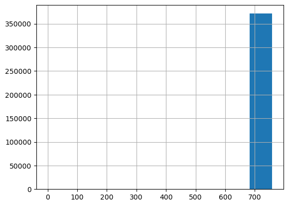
Clearly, almost all the ads are in one bin. Let’s look at this:
number_ads, bins = np.histogram (df_clean.offset_date)
pd.DataFrame ([number_ads, bins[1:]], index=['number_ads','bins'])| 0 | 1 | 2 | 3 | 4 | 5 | 6 | 7 | 8 | 9 | |
|---|---|---|---|---|---|---|---|---|---|---|
| number_ads | 1.0 | 0.0 | 0.0 | 0.0 | 1.0 | 0.0 | 4.0 | 5.0 | 53.0 | 371464.0 |
| bins | 75.9 | 151.8 | 227.7 | 303.6 | 379.5 | 455.4 | 531.3 | 607.2 | 683.1 | 759.0 |
In the table above, we see that the last bin is where almost all the ads are, followed by the second to last bin, with few ads. From the 5th bin downwards, there are only 2 ads.
very_old_ads = df_clean[df_clean.offset_date < 450]
other_ads = df_clean[df_clean.offset_date >= 450]
print ('oldest ads created between: ', very_old_ads.dateCreated.min(),very_old_ads.dateCreated.max())
print ('remaining ads created between: ', other_ads.dateCreated.min(),other_ads.dateCreated.max())oldest ads created between: 2014-03-10 00:00:00 2015-03-20 00:00:00
remaining ads created between: 2015-06-11 00:00:00 2016-04-07 00:00:00We have four options:
- no outlier
- oldest (2014) is outlier
- two oldest (before mid year 2016) are outliers.
- all but the ones in the last two bins (with 53 and 371464 rows) are outliers
- use a quantile as done for the other numerical variables.In this analysis, we use the third option: treat the two oldest ads as two outliers:
if outliers['date_created']:
df_clean = df_clean[df_clean.dateCreated >= '2015-06-01']df_clean = df_clean.drop (columns = 'offset_date')yearRegistration + monthRegistration
We use yearOfRegistration and monthOfRegistration to calculate the age of the vehicle, in number of months since the ad was posted. We first look if the outlier removal removed suspicious low and high values:
df_clean[['monthOfRegistration','yearOfRegistration']].describe().loc[['min','max']]| monthOfRegistration | yearOfRegistration | |
|---|---|---|
| min | 0.0 | 1978.0 |
| max | 12.0 | 2018.0 |
There are still months with value 0, we treat them as missing values. We impute them using the middle of the year, month 6.
df_clean.loc [df_clean.monthOfRegistration==0, 'monthOfRegistration'] = 6df_clean['age'] = pd.to_datetime(df_clean.dateCreated.max()) - pd.to_datetime ({
'month': df_clean.monthOfRegistration,
'year': df_clean.yearOfRegistration,
'day': np.tile (15, df_clean.shape[0])}
)
df_clean['age'] = df_clean['age'].dt.daysnumerical_variables.remove ('yearOfRegistration')
numerical_variables.remove ('monthOfRegistration')
numerical_variables.append ('age')Target variable
df_clean[target_variable] = (df_clean ['lastSeen'] - df_clean['dateCreated']).dt.daysdate information
Depending on whether the ad was posted on a weekend, on holidays, etc., more people might be able to look at it and it might be sold more quickly. We add this information here:
if add_datepart_flag:
country_holidays = holidays.country_holidays('DE')
df_clean['holidays'] = [int(day in country_holidays) for day in df_clean.dateCreated]
df_clean['day_of_week'] = df_clean.dateCreated.dt.dayofweek.valuesnumerical_variables.append ('day_of_week')
categorical_variables.append ('holidays')joblib.dump ([df_clean, numerical_variables, categorical_variables], results_path / 'df_clean.pkl')['results/used_cars/df_clean.pkl']Histograms
We look at the resulting histograms to see if there are clear outliers. This doesn’t seem to be the case.
df_clean['price'].hist()<Axes: >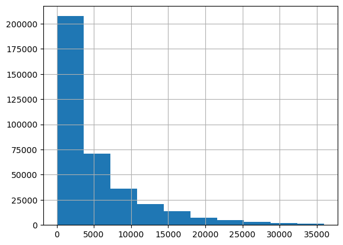
df_clean['age'].hist()<Axes: >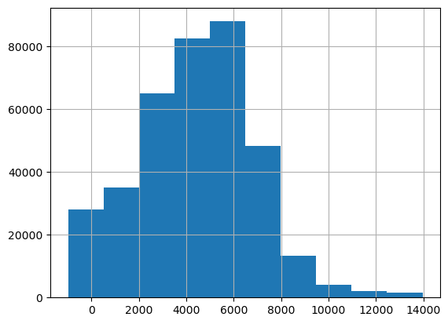
df_clean['powerPS'].hist()<Axes: >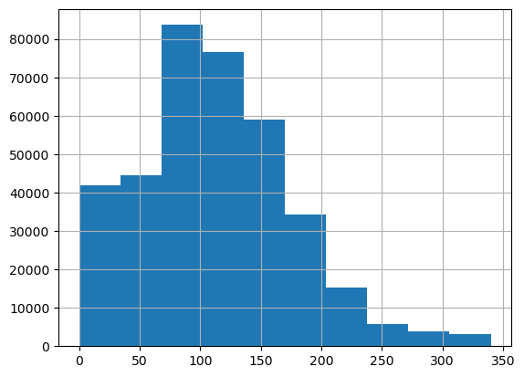
df_clean['kilometer'].hist()<Axes: >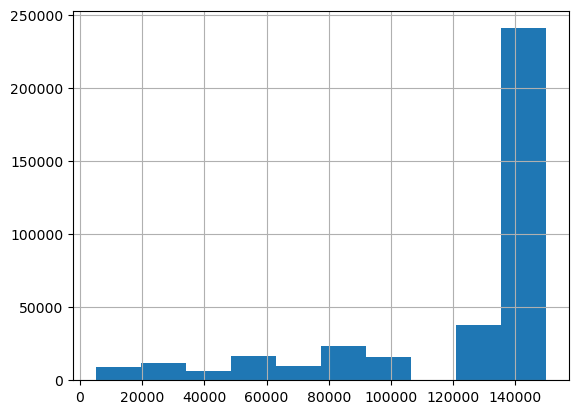
Split data and preprocess
The first step is to split the data in training and validation. For simplicity, e don’t use a test set here, although we should use it if we wanted to estimate the final accuracy after selecting our best model on the validation set.
from sklearn.model_selection import train_test_splittrain_idx, valid_idx = train_test_split(np.arange(df_clean.shape[0]), test_size=0.30, random_state=42)
joblib.dump ([train_idx, valid_idx], results_path / 'indexes.pkl')['results/used_cars/indexes.pkl']The second step is to preprocess the data. We do that with the help of TabularPandas in the fastai library:
Using
Categorify, we replace columns incategorical_variableslist with numeric categorical columns. We use just an discrete value instead of using a one-hot encoding. This tends to work better for decision trees and random forests, as explored in “Splitting on Categorical Predictors in Random Forests”Using
FillMissing, we replace missing values with the median, and we create a boolean column that is True for any row where the value was missing
procs = [Categorify, FillMissing]
tabular = TabularPandas (df_clean, procs, categorical_variables, numerical_variables, y_names=target_variable, splits=(list(train_idx),list(valid_idx)))path = Path('data/datasets')
joblib.dump (tabular, path / 'tabular.pkl')['data/datasets/tabular.pkl']Decision Tree
We start by fitting a very simple yet powerful type of model, the decision tree. A good characteristic of this type of model is that it is interpretable and allows to analyze the data and the important variables.
tabular = joblib.load (path / 'tabular.pkl')X, y = tabular.train.xs, tabular.train.y
valid_X, valid_y = tabular.valid.xs, tabular.valid.yVisualization
We can visualize on which basis the tree splits the data. We see that:
- The most important predictor is the `price`: the lower the price, the lower the duration of the sale.
- The data where most errors happen is the one for large durations. This might be due to the few cases with a long duration, which could be considered almost outliers.m = DecisionTreeRegressor(max_leaf_nodes=4)
m.fit (X, y);draw_tree(m, X, size=10, leaves_parallel=True, precision=2)Warning: Could not load "/home/jaumeamllo/miniconda3/envs/tsforecast/bin/../lib/graphviz/libgvplugin_pango.so.6" - It was found, so perhaps one of its dependents was not. Try ldd.
Warning: no value for width of non-ASCII character 226. Falling back to width of space character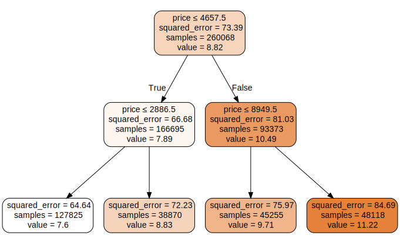
We can visualize the same using the dtreeviz library:
samp_idx = np.random.permutation(len(y))[:500]
viz = dtreeviz.model (m, X.iloc[samp_idx], y.iloc[samp_idx], feature_names=X.columns, target_name=target_variable)viz.view (fontname='DejaVu Sans', scale=2, label_fontsize=16,
orientation='LR')/home/jaumeamllo/miniconda3/envs/tsforecast/lib/python3.10/site-packages/sklearn/base.py:420: UserWarning: X does not have valid feature names, but DecisionTreeRegressor was fitted with feature names
Warning: Could not load "/home/jaumeamllo/miniconda3/envs/tsforecast/bin/../lib/graphviz/libgvplugin_pango.so.6" - It was found, so perhaps one of its dependents was not. Try ldd.
Warning: no value for width of non-ASCII character 226. Falling back to width of space character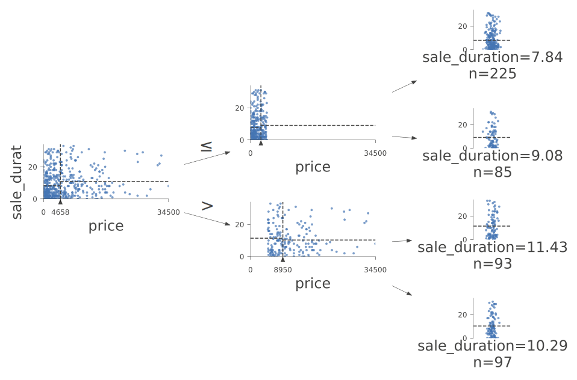
Training
Let’s first start by training a full size decision tree.
dt_model = DecisionTreeRegressor()
dt_model.fit(X, y);Evaluation
We use the root of the mean squared error as evaluation metric.
def r_mse (pred, y):
return round(math.sqrt(((pred-y)**2).mean()), 6)
def m_rmse (dt_model, X, y):
return r_mse(dt_model.predict(X), y)Let’s see at the error on the training set:
m_rmse (dt_model, X, y)0.283855… and on the validation set:
m_rmse (dt_model, valid_X, valid_y)11.614361We can see that we are clearly overfitting. Let’s look at the number of leaves, and compare it against the total number of observations:
dt_model.get_n_leaves(), len(X)(201472, 260068)The number of leaves is similar to the number of observations. We need to reduce the size of the decision tree:
dt_model = DecisionTreeRegressor (min_samples_leaf=25)
dt_model.fit (tabular.train.xs, tabular.train.y)
m_rmse (dt_model, X, y), m_rmse(dt_model, valid_X, valid_y)(7.683234, 8.817406)We get a much better error on validation set, let’s see the number of leaves:
dt_model.get_n_leaves()7949Random Forest
We have built a baseline using Decision Trees. Let us explore now the use of Random Rorests
Training
def fitted_rf (X, y, n_estimators=128, max_features=0.5, min_samples_leaf=5, **kwargs):
return RandomForestRegressor (
n_jobs=-1, n_estimators=n_estimators, max_features=max_features,
min_samples_leaf=min_samples_leaf, oob_score=True, **kwargs
).fit(X, y)rf_model = fitted_rf (X, y);
joblib.dump (rf_model, results_path / 'rf_model1.pkl')Evaluation
m_rmse (rf_model, X, y), m_rmse(rf_model, valid_X, valid_y), r_mse (rf_model.oob_prediction_, y)(6.048382, 8.272029, 8.215691)We see whether using another rule like the sqrt for calculating max_features per tree improves the model:
rf_model_2 = fitted_rf (X, y, max_features='sqrt');
m_rmse (rf_model_2, X, y), m_rmse(rf_model_2, valid_X, valid_y), r_mse(rf_model_2.oob_prediction_, y)(6.649456, 8.296415, 8.233054)It doesnt’ improve. We could play with the ratio of max features, min samples per leaf, and other hyper-parameters. We leave this as future work.
Visualization
Let’s see the impact of n_estimators on the performance:
import warnings
warnings.filterwarnings ('ignore')
preds = np.stack([t.predict(valid_X) for t in rf_model.estimators_])
plt.plot([r_mse(preds[:i+1].mean(0), valid_y) for i in range(128)]);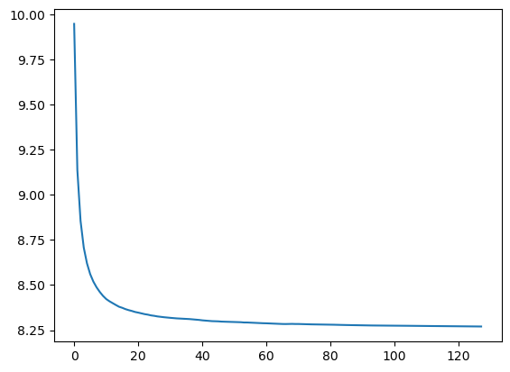
We see that the accuracy plateaus from 80 estimators onwards
Interpretation
Confidence
We look at the standard deviation of the predictions across the different trees. For those sales where there is low standard deviation, most of the trees agree on the sale duration estimate. This is useful in production, to maybe avoid providing a predition for those requests where there is little agreement on the sale duration.
preds = np.stack([t.predict(valid_X) for t in rf_model.estimators_])
preds_std = preds.std(0)plt.hist (preds_std);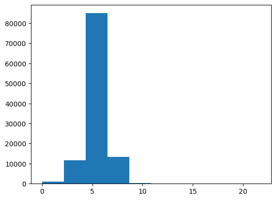
We see that there is in general high standard deviation for most sales, except for few cases.
Feature importance
Let’s look at what features are most important for the regression task:
def rf_feat_importance (rf_model, df):
return pd.DataFrame({'cols':df.columns, 'imp':rf_model.feature_importances_}).sort_values('imp', ascending=False)importance = rf_feat_importance (rf_model, X)
importance| cols | imp | |
|---|---|---|
| 7 | postalCode | 0.193067 |
| 14 | price | 0.184392 |
| 17 | age | 0.153438 |
| 15 | powerPS | 0.099052 |
| 6 | model | 0.088209 |
| 0 | brand | 0.061477 |
| 18 | day_of_week | 0.060955 |
| 3 | vehicleType | 0.042012 |
| 16 | kilometer | 0.036495 |
| 9 | abtest | 0.023295 |
| 4 | fuelType | 0.016574 |
| 8 | gearbox | 0.015988 |
| 5 | notRepairedDamage | 0.015318 |
| 10 | holidays | 0.006917 |
| 11 | price_na | 0.001413 |
| 13 | age_na | 0.000947 |
| 12 | powerPS_na | 0.000451 |
| 1 | seller | 0.000000 |
| 2 | offerType | 0.000000 |
We see that the most important features are:
- postalCode: probably due to the higher density of population, and thus buyers, in certain areas.
- price: cheaper cars are sold faster.
- age: newer is betterSurprisingly, the day of the week plays a role even more important than the number of kilometers, to be sold faster, maybe because people look at ads more at certain days of the week.
Let’s look at the same graphically:
def plot_feature_importance (importance):
return importance.plot('cols', 'imp', 'barh', figsize=(12,7), legend=False)
plot_feature_importance(importance);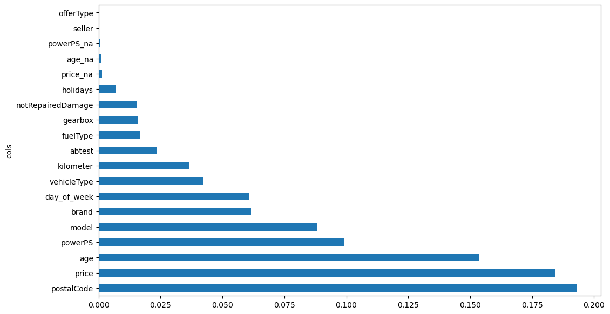
Removing variables
We see if we can improve the performance by removing those features that have very little importance and might be adding noise:
def evaluate_removing_variables (importance, X, y, valid_X, valid_y, threhsold):
to_keep = importance[importance.imp>threhsold].cols
X_imp = X[to_keep]
valid_X_imp = valid_X[to_keep]
rf_model = fitted_rf(X_imp, y)
print (m_rmse(rf_model, X_imp, y), m_rmse(rf_model, valid_X_imp, valid_y), r_mse (rf_model.oob_prediction_, y))
return rf_model, X_imp, valid_X_imp, to_keeprf_model, X_imp, valid_X_imp, to_keep = evaluate_removing_variables (importance, X, y, valid_X, valid_y, 0.0001)
joblib.dump (rf_model, results_path / 'removing_low_importance.pkl')6.045863 8.268369 8.211243['results/used_cars/removing_low_importance.pkl']There is almost no improvement, let’s see a bit more agressive pruning:
rf_model2, X_imp2, valid_X_imp2, to_keep2 = evaluate_removing_variables (importance, X, y, valid_X, valid_y, 0.001)6.050095 8.272465 8.213242rf_model2, X_imp2, valid_X_imp2, to_keep2 = evaluate_removing_variables (importance, X, y, valid_X, valid_y, 0.005)6.010566 8.271691 8.210651The best threshold seems to be 0.0001. Let’s use it and look at the feature importance again, after removing variables with low importance:
importance = rf_feat_importance(rf_model, X_imp)
plot_feature_importance(importance);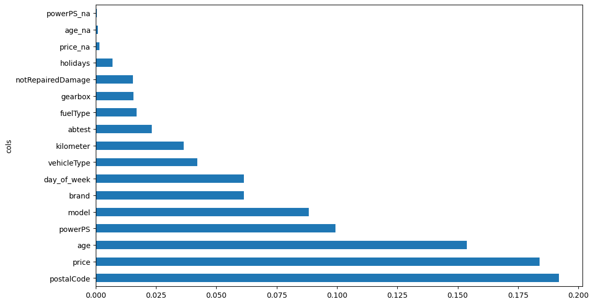
Removing redundant variables
We see if there are variables that might be closely correlated, in terms of ranking:
cluster_columns(X_imp)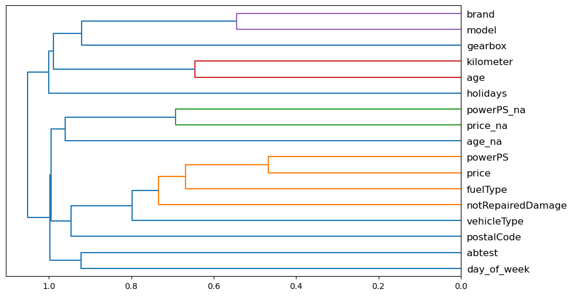
PowerPS and price seem to be quite correlated. We see what happens when we remove each of the variables in turn. To do it quickly, we use the out-of-bag score, by using a random forest where each tree is trained on a smaller subset of data, so that the out-of-bag score is measured on the remaining subset. This score indicates the generalization provided, being the higher the better.
def get_oob (df, y):
m = RandomForestRegressor(n_estimators=40, min_samples_leaf=15,
max_samples=50000, max_features=0.5, n_jobs=-1, oob_score=True)
m.fit(df, y)
return m.oob_score_Let’s see the score of the original features:
def fitted_rf2 (X, y):
return RandomForestRegressor (
n_estimators=40, min_samples_leaf=15,
max_samples=50000, max_features=0.5, n_jobs=-1, oob_score=True).fit(X, y)original_oob = get_oob(X_imp, y)
original_oob0.06008218588804892oob_scores = {c:get_oob(X_imp.drop(c, axis=1), y) for c in (importance.cols)}
oob_scores{'postalCode': 0.058280710022504234,
'price': 0.0415493436634512,
'age': 0.05244495695648832,
'powerPS': 0.059019327633660135,
'model': 0.0593482908544406,
'brand': 0.058739696982127,
'day_of_week': 0.05945691943436404,
'vehicleType': 0.05943518125387026,
'kilometer': 0.05984718680711576,
'abtest': 0.06071818811404983,
'fuelType': 0.060080938385732696,
'gearbox': 0.06072952180624125,
'notRepairedDamage': 0.06106010397906847,
'holidays': 0.05685565776346668,
'price_na': 0.060948957015006355,
'age_na': 0.06027832457888893,
'powerPS_na': 0.06106806907313633}{k:oob_scores[k] for k in oob_scores if oob_scores[k] > original_oob}{'abtest': 0.06071818811404983,
'gearbox': 0.06072952180624125,
'notRepairedDamage': 0.06106010397906847,
'price_na': 0.060948957015006355,
'age_na': 0.06027832457888893,
'powerPS_na': 0.06106806907313633}It seems that dropping the notRepairedDamage, abtest, and powerPS_na might be beneficial
def evaluate_removing_redundant (to_drop, X_imp, y, valid_X, valid_y):
print ('OOB score: ', get_oob(X_imp.drop(to_drop, axis=1), y))
X_final = X_imp.drop(to_drop, axis=1)
valid_X_final = valid_X_imp.drop(to_drop, axis=1)
rf_model = fitted_rf(X_final, y)
print ('Regression errors: ', m_rmse(rf_model, X_final, y), m_rmse(rf_model, valid_X_final, valid_y), r_mse(rf_model.oob_prediction_, y))
return rf_model, X_final, valid_X_finalrf_model, X_final, valid_X_final = evaluate_removing_redundant (['abtest', 'notRepairedDamage', 'powerPS_na'], X_imp, y, valid_X, valid_y)
joblib.dump ([rf_model, X_final, valid_X_final], results_path / 'removing_redundant.pkl')OOB score: 0.0611047486037124
Regression errors: 6.050136 8.261787 8.202955['results/used_cars/removing_redundant.pkl']rf_model2, X_final2, valid_X_final2 = evaluate_removing_redundant (['notRepairedDamage', 'powerPS_na'], X_imp, y, valid_X, valid_y)OOB score: 0.0606092565973716
Regression errors: 6.065446 8.26426 8.207189rf_model2, X_final2, valid_X_final2 = evaluate_removing_redundant (['notRepairedDamage'], X_imp, y, valid_X, valid_y)OOB score: 0.060027249156653584
Regression errors: 6.03148 8.262977 8.207328rf_model2, X_final2, valid_X_final2 = evaluate_removing_redundant (['abtest'], X_imp, y, valid_X, valid_y)OOB score: 0.060528790706093516
Regression errors: 6.037068 8.266976 8.205677We select the model without [‘abtest’, ‘notRepairedDamage’, ‘powerPS_na’]. The result is slightly better, with lower number of variables, which tends to be good.
Neural Network
We use a similar preprocessing as the one used for RF, but with two important differences: - The numerical variables are standard normalized. - The categorical variables will be passed to an embedding layer in the Neural Network, which maps discrete integers to embeddings that have been learned to optimally represent each category in the variable. This tends to be a bit more effective and efficient than using one-hot-encoding.
selected_columns = set (X_final.columns).intersection(df_clean.columns)
df_nn = (df_clean[list(selected_columns) + [target_variable]]).copy()
df_nn[target_variable] = df_nn[target_variable].astype (np.float32)
categorical_variables = set (selected_columns).intersection (categorical_variables)
numerical_variables = set (selected_columns).intersection (numerical_variables)
procs = [Categorify, FillMissing, Normalize]
tabular = TabularPandas (df_nn, procs, list(categorical_variables), list(numerical_variables), y_names=target_variable, splits=(list(train_idx),list(valid_idx)))We use a relatively high batch-size due to the fact that tabular data does not occupy much memory.
dls = tabular.dataloaders(1024)
y = tabular.train.y
learn = tabular_learner(dls, y_range=(np.floor(y.min()), np.ceil(y.max())), layers=[500,250],
n_out=1, loss_func=F.mse_loss)
learn.lr_find()SuggestedLRs(valley=0.001737800776027143)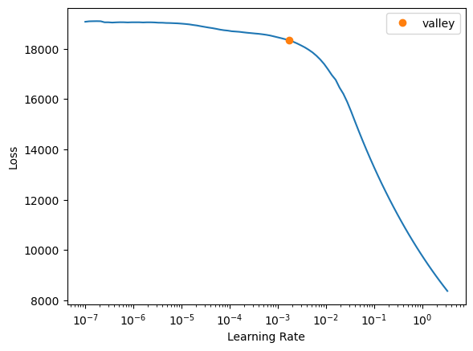
We try first with learning rate 1e-2 and 10 epochs:
learn.fit_one_cycle(10, 1e-2)| epoch | train_loss | valid_loss | time |
|---|---|---|---|
| 0 | 602.610474 | 76.169884 | 00:11 |
| 1 | 78.452293 | 79.093147 | 00:10 |
| 2 | 72.395233 | 75.213257 | 00:10 |
| 3 | 68.382301 | 73.556313 | 00:10 |
| 4 | 64.683945 | 75.480438 | 00:10 |
| 5 | 61.083923 | 77.244652 | 00:10 |
| 6 | 50.728420 | 79.223137 | 00:11 |
| 7 | 43.104126 | 84.684929 | 00:10 |
| 8 | 34.933899 | 85.208206 | 00:10 |
| 9 | 30.915373 | 87.217155 | 00:10 |
We see that something close to 4 or 5 epochs is better
learn = tabular_learner(dls, y_range=(np.floor(y.min()), np.ceil(y.max())), layers=[500,250],
n_out=1, loss_func=F.mse_loss)
learn.fit_one_cycle(4, 1e-2)
preds, targs = learn.get_preds()
r_mse (preds,targs)| epoch | train_loss | valid_loss | time |
|---|---|---|---|
| 0 | 345.358978 | 78.925217 | 00:11 |
| 1 | 74.916069 | 75.385986 | 00:10 |
| 2 | 65.404991 | 74.644577 | 00:10 |
| 3 | 51.674995 | 76.773880 | 00:11 |
8.762071The validation error is 8.76, bigger than the one obtained by the RF. Let’s see with a lower learning rate:
learn2 = tabular_learner(dls, y_range=(np.floor(y.min()), np.ceil(y.max())), layers=[500,250],
n_out=1, loss_func=F.mse_loss)
learn2.fit_one_cycle(10, 1e-3)| epoch | train_loss | valid_loss | time |
|---|---|---|---|
| 0 | 12781.711914 | 7655.472656 | 00:11 |
| 1 | 333.679382 | 107.907936 | 00:11 |
| 2 | 68.636696 | 75.976501 | 00:11 |
| 3 | 60.806812 | 77.812447 | 00:10 |
| 4 | 54.039669 | 81.903381 | 00:10 |
| 5 | 46.701462 | 79.440315 | 00:10 |
| 6 | 37.569061 | 79.386604 | 00:10 |
| 7 | 29.916273 | 80.873795 | 00:10 |
| 8 | 24.533495 | 81.103035 | 00:11 |
| 9 | 21.414110 | 81.744980 | 00:10 |
We see that the loss is not better than using a bigger learning rate. Let’s see even bigger:
learn2 = tabular_learner(dls, y_range=(np.floor(y.min()), np.ceil(y.max())), layers=[500,250],
n_out=1, loss_func=F.mse_loss)
learn2.fit_one_cycle(4, 1e-1)| epoch | train_loss | valid_loss | time |
|---|---|---|---|
| 0 | 198.138016 | 131.202820 | 00:10 |
| 1 | 75.276131 | 75.907112 | 00:11 |
| 2 | 113.341293 | 151.957809 | 00:11 |
| 3 | 150.795166 | 151.957809 | 00:10 |
Clearly, the best learning rate seems to be 0.01
We could now examine other hyper-parameters, like regularization, dropout, adding more layers or units per layer, adding batch-normalization, etc.
Ensemble of RF and NN
We see if using an ensemble of RF and NN improves the results:
preds, targs = learn.get_preds()
rf_preds = rf_model.predict(valid_X_final)
ens_preds = (to_np(preds.squeeze()) + rf_preds) /2
r_mse(ens_preds,valid_y)8.339824While it improves the result of using NN, using RF alone seems to be a better option in this data.
Future lines of work
- As indicated above, we should now examine other hyper-parameters, like regularization, dropout, adding more layers or units per layer, adding batch-normalization, etc.
- Given that a random forest seems to be the best type of model for this data, it is a good idea to explore using XGBoost, CatBoost, or other types of tree ensembles.